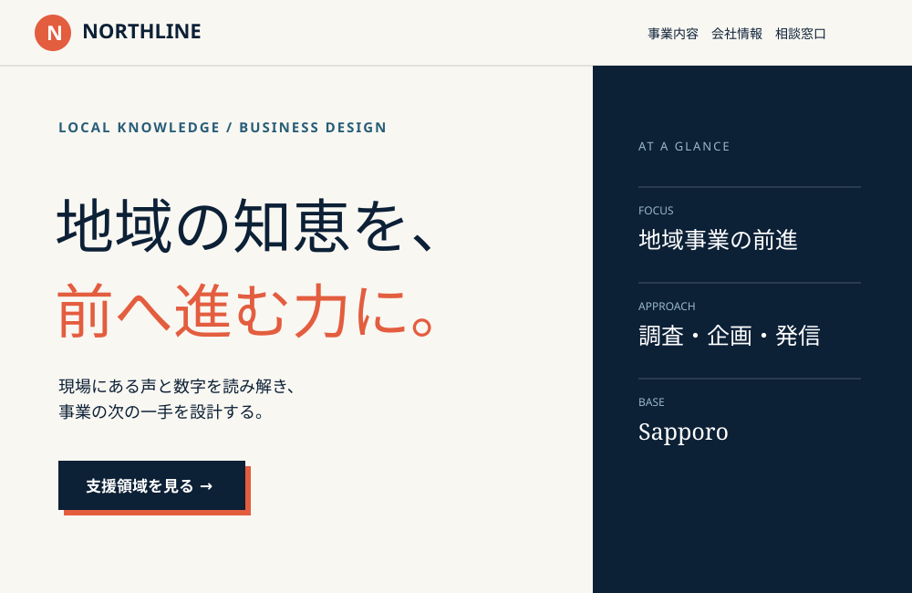

営業先へ会社を紹介したい
事業内容、会社の概要、相談先を整理し、名刺やメールから案内できる場所をつくります。
業種から選ぶ / FOR YOUR BUSINESS
何をする会社か。何を頼めるか。初めての取引先にも、分かりやすく。
事業内容、会社の概要、相談先を整理し、名刺やメールから案内できる場所をつくります。
トップで全体像を伝え、事業ごとの説明や会社情報へ進める構成を検討します。ページ数は必要な情報量で決めます。
事業内容と会社情報が短くまとまる場合は1ページも候補です。不要なページや機能を増やさず、目的と予算から相談できます。
掲載内容の例
すべてを最初から用意する必要はありません。今ある資料をもとに、一緒に整理します。
誰に、どのようなサービスを提供するか。
実際に説明できる得意分野や対応方法。
公開する基本情報と、責任ある窓口。
掲載許可のある実績（まだなければ作業内容を具体化）
連絡手段、必要な情報、返信までの案内。

1ページ基本プランはモニター価格・先着5件29,800円（税込）、終了後49,800円（税込）。最大5セクション・支給画像5点・デザイン1案・修正2回・公開設定が対象です。企業サイトは5ページ109,800円〜、LPは59,800円〜（いずれも税込）が目安です。
通常の公開目安は5〜10営業日。必要情報・素材・着手金と制作枠が揃った場合、初稿は最短2営業日です。外部サービス費は別途実費です。
サービスが一つで説明が短ければ1ページが候補です。事業ごとに詳細が必要な場合や、会社情報を分けたい場合は複数ページを検討します。
いいえ。モニター価格は条件内の1ページ制作に適用されます。企業サイトは5ページ109,800円〜（税込）を目安に、ページ数や機能を確認してお見積もりします。
納品時に、合意した範囲でサイトデータ・公開方法・更新方法を引き継ぎます。公開先とドメインは原則としてお客様名義です。
今の状況と、つくりたいものを聞かせてください。相談・見積もりは無料です。
企業・個人事業の制作を相談する